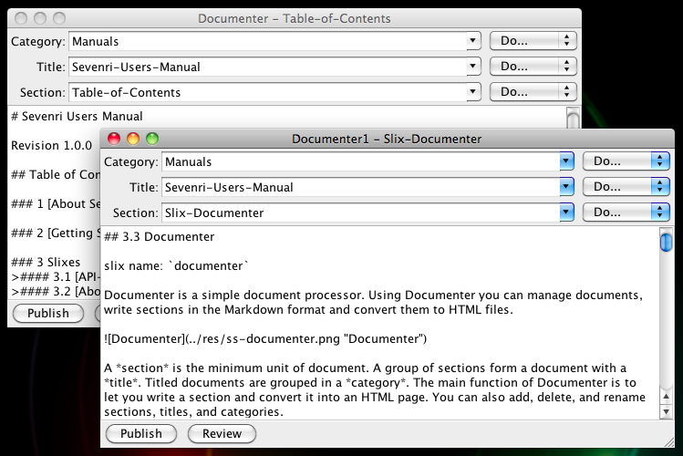

slix name: documenter
Documenter is a simple document processor. Using Documenter you can manage documents, write sections in the Markdown format and convert them to HTML files.

A section is the minimum unit of document. A group of sections form a document with a title. Titled documents are grouped in a category. The main function of Documenter is to let you write a section and convert it into an HTML page. You can also add, delete, and rename sections, titles, and categories.
Suppose you are going to create a document describing the API of your slix X. You classify the document as "Technical Notes", name the document as "Slix X", and write two sections called "The Slix X API" and "API Summary".
Here are the steps to get to work on the document.
In the Category listbox type "Technical Notes" and then choose Add from the Do... listbox right next to the Category listbox. Notice that the name is changed to "Technical_Notes". You can't use some characters in the name for category, title, and section. Currently those invalid characters are:
< > : " / \ | ? *
and white spaces. When invalid character is used, it is replaced with '_' (underscore) and a small warning window pops up for a moment to notify the change.
Likewise, type "Slix X" in the Title listbox and choose Add from the Do... listbox right next to the Title listbox. "Slix X" will be changed to "Slix_X".
Then type the section name "The Slix X API" in the Section listbox and choose Add from the Do... listbox right next to the Section listbox. The name will be changed to "The_Slix_X_API" and the text pane becomes editable. Also notice the Publish and Review buttons are enabled.
Now you can start writing the section. In the text pane press META+F to find a string. Press META+G to find next match of the string. The search begins from the caret position and ends when no match is found.
Press META+S to save the section. A small "Saved" window pops up for a moment to indicate the save.
When you are ready to convert the section into an HTML file, press META+P or the Publish button. This saves the section and then convert it into an HMTL page. A small "Save & published" window pops up for a moment also.
To see the HTML page, press META+R or the Review button. Documenter opens the page in the default system browser.
Back to the Documenter window, update the section and press META+P. This time you don't press META+R to review the page. Instead, reload the page in the browser (by pressing F5, supported by most browsers) to see the update.
Take steps from 3 to 8 to write the "API Summary" section.
Documenter saves section when you close Documenter window. Documenter also remembers section name per instance so that you can get back to work on the section when you open Documenter with the same instance name next time. For example, suppose you were working on the "The Slix X API" section in "Documenter" and the "API Summary" section in "Documenter1" side by side. To get back to work on them, you click documenter in the Sevenri twice. The "The Slix X API" section opens in "Documenter" by the first click, and the "API Summary" section opens in "Documenter1" by the second click".
Eventually you would create multiple sections, titles, and categories. To get back to a section of a document in a category, choose 1) the category name from the Category listbox, then 2) the title name of the document from the Title listbox, and finally 3) the section name from the Section listbox.
Using the Do... listbox next to the Category listbox, you can add, delete, and rename category. Likewise, you can add, delete, and rename title and section using corresponding Do... listbox.
Note: Deleted items are moved into the .sevenri/trash/doc directory. You can retrieve most recently deleted items from there.
Documenter saves document in a hierarchical structure under the doc directory. The directory structure of the "Slix X" document you created above, for example, should look like below:
doc/Technical_Notes/.metadoc
doc/Technical_Notes/Slix_X/.metadoc
doc/Technical_Notes/Slix_X/out/.metadoc
doc/Technical_Notes/Slix_X/out/The_Slix_X_API.html
doc/Technical_Notes/Slix_X/out/API_Summary.html
doc/Technical_Notes/Slix_X/res/
doc/Technical_Notes/Slix_X/src/.metadoc
doc/Technical_Notes/Slix_X/src/The_Slix_X_API.md
doc/Technical_Notes/Slix_X/src/API_Summary.md
Section is saved to the src directory. When you conver section into HTML page, the page will be created in the out directory. You can put any files in the res directory. But normally you put files referenced from HTML page, such as images and stylesheets.
The .metadoc file is used by Documenter to mange document.
As mentioned above, you can open multiple Documenters and work on different sections side by side. In the case you open the same section in multiple Documenters, for example, you open section A in Documenter instance X when sction A is already opened in Documenter instance Y, Documenter instance Y comes to the font and you are locked out from editing, saving, and publishing section A in Documenter instance X.
In addition, when a section is opened in multiple Documenters, you can't delete or rename the section. Ditto to delete and rename title and category.
Documenter requires sections written in the Markdown format. Visit DARING FIREBALL for more details about Markdown and the syntax.
Documenter is using the following third party components to convert section into HTML page.
Showdown: a JavaScript port of the original Perl version of Markdown, Copyright (C) 2007 John Fraser All rights reserved. (Original Markdown Copyright (C) 2004 John Gruber All rights reserved.)
Mozilla Rhino: an open-source implementation of JavaScript written entirely in Java. Rhino project is one of the Mozilla Foundation's projects. Mozilla Rhino is installed by leiningen as a dependence.
Thanks to Brian Carper for showing us what we can do by combining these technologies in his blog.